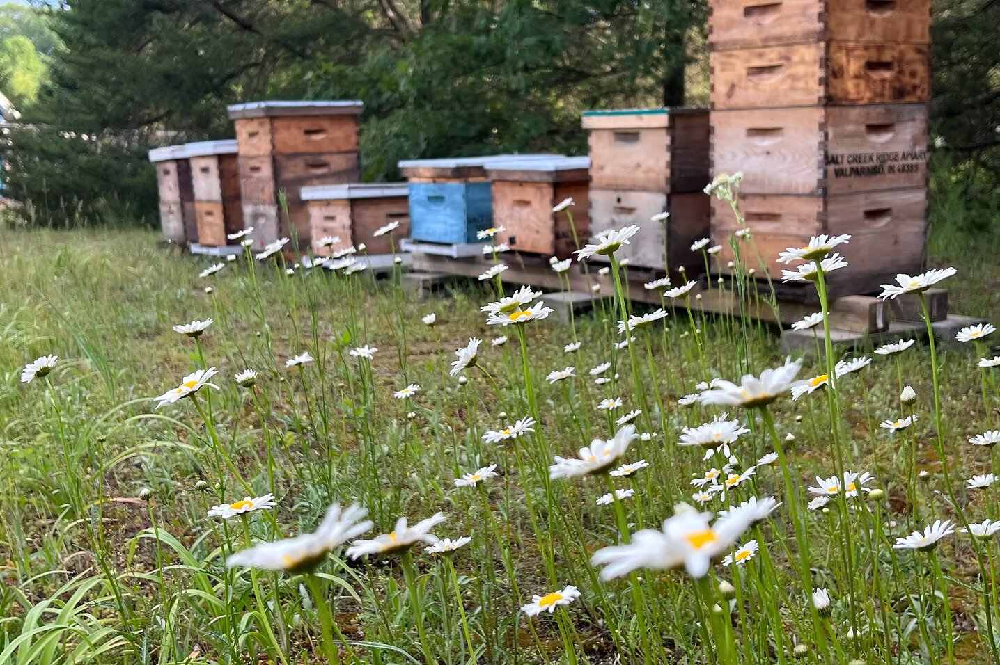
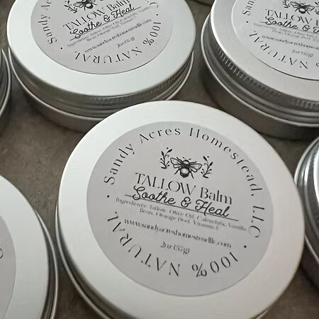
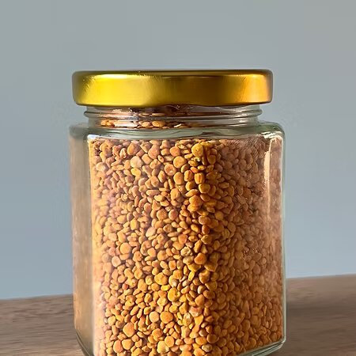
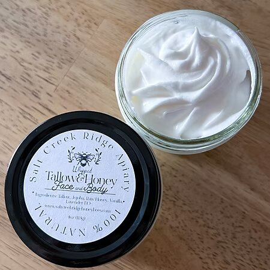
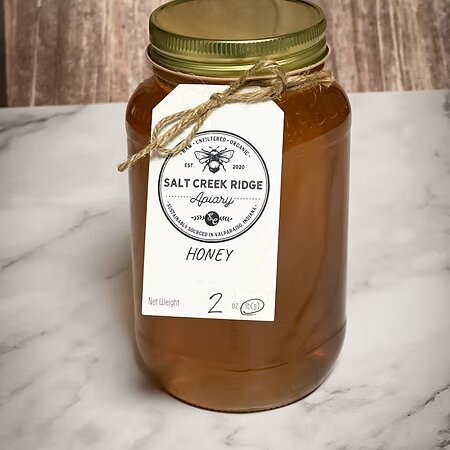
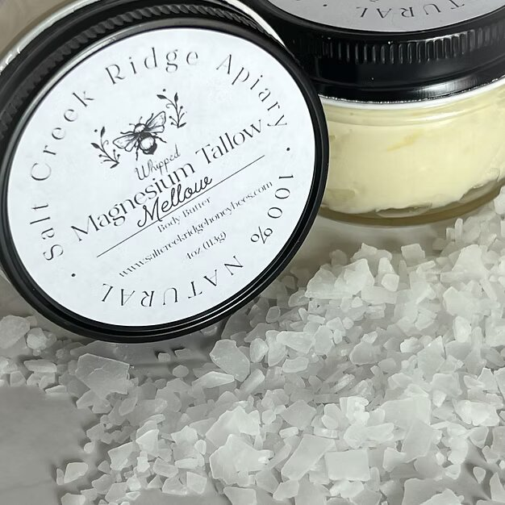
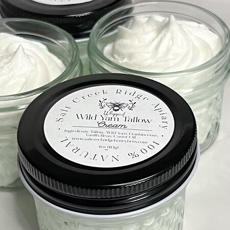
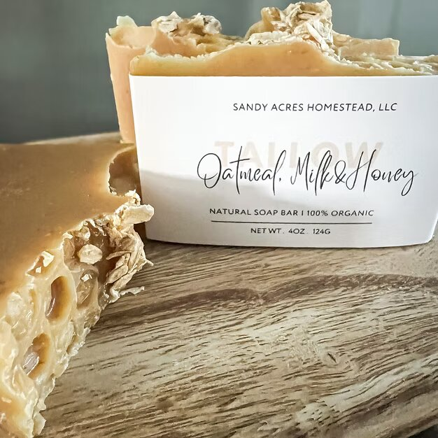
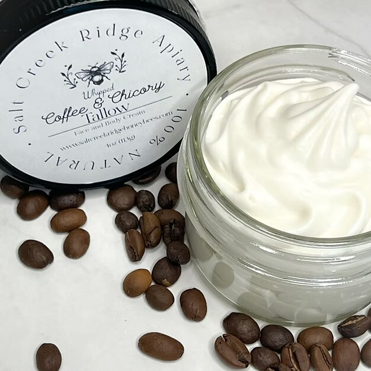

<script type="application/ld+json">
{
  "@context": "https://schema.org",
  "@graph": [
    {
      "@type": "Organization",
      "@id": "https://www.edgeofliberty.us/sandy-acres-homestead/#org",
      "name": "Sandy Acres Homestead",
      "url": "https://www.edgeofliberty.us/sandy-acres-homestead/",
      "description": "Homestead with backyard apiaries across NWI - Hyperlocal honey",
      "image": "https://www.edgeofliberty.us/sandy-acres-homestead/0000592580692_832431969543075_459012994306849314_n.jpg",
      "sameAs": [
        "https://www.sandyacreshomesteadllc.com/",
        "https://www.sandyacreshomesteadllc.com/",
        "https://www.facebook.com/SandyAcresHomestead",
        "https://www.instagram.com/sandyacreshoneybees"
      ],
      "areaServed": {
        "@type": "City",
        "name": "Valparaiso, Indiana"
      }
    },
    {
      "@type": "BreadcrumbList",
      "itemListElement": [
        {
          "@type": "ListItem",
          "position": 1,
          "name": "Home",
          "item": "https://www.edgeofliberty.us/"
        },
        {
          "@type": "ListItem",
          "position": 2,
          "name": "Sandy Acres Homestead",
          "item": "https://www.edgeofliberty.us/sandy-acres-homestead/"
        }
      ]
    }
  ]
}
</script>
<section class="vendor-page">
<h1>Sandy Acres Homestead</h1>
<div class="vendor-content">
<p class="vendor-lead">Homestead with backyard apiaries across NWI - Hyperlocal honey — find Sandy Acres Homestead at The Edge of Liberty Craft Fair in Valparaiso, IN (Northwest Indiana).</p>
<p>USN Veteran family-owned and operated homestead with backyard apiaries located across Northwest Indiana.</p>
<p></p>
<p>What began as a simple desire to live more intentionally has grown into a way of life that grounds our family. We homestead because it slows us down, reminds us to pay attention, and keeps us connected--to the land, to the seasons, and to each other.</p>
<p></p>
<p>We believe in making things with our hands, caring for the animals entrusted to us, and crafting goods that are honest, time-tested, and nourishing. Every jar of honey, bar of soap, and batch of tallow is made right here at home, one small step in choosing a simpler, more meaningful life.</p>
<p></p>
<p>We&#x27;ll be back at the craft fair with honey after the June harvest...come see us!</p><h3>Contact & Links</h3>
<ul>
<li><a href="https://www.sandyacreshomesteadllc.com/">Website</a></li>
<li><a href="https://www.sandyacreshomesteadllc.com/">Store</a></li>
<li><a href="https://www.facebook.com/SandyAcresHomestead">Facebook</a></li>
<li><a href="https://www.instagram.com/sandyacreshoneybees">Instagram</a></li>
</ul>
<div class="vendor-dates">
<h3>Find us at these craft fair dates</h3>
<ul>
<li><a href="/may-17-2026/">May 17, 2026</a></li>
<li><a href="/may-31-2026/">May 31, 2026</a></li>
<li><a href="/june-14-2026/">June 14, 2026</a></li>
<li><a href="/june-28-2026/">June 28, 2026</a></li>
<li><a href="/july-12-2026/">July 12, 2026</a></li>
<li><a href="/july-19-2026/">July 19, 2026</a></li>
<li><a href="/july-26-2026/">July 26, 2026</a></li>
<li><a href="/august-09-2026/">August 09, 2026</a></li>
<li><a href="/august-23-2026/">August 23, 2026</a></li>
<li><a href="/september-06-2026/">September 06, 2026</a></li>
<li><a href="/september-20-2026/">September 20, 2026</a></li>
<li><a href="/october-04-2026/">October 04, 2026</a></li>
<li><a href="/october-18-2026/">October 18, 2026</a></li>
<li><a href="/november-01-2026/">November 01, 2026</a></li>
</ul>
</div>
<h3>Gallery</h3>
<div class="vendor-photos constrained-gallery">
<div class="vendor-masonry">










</div>
</div>
</div>
</section>
